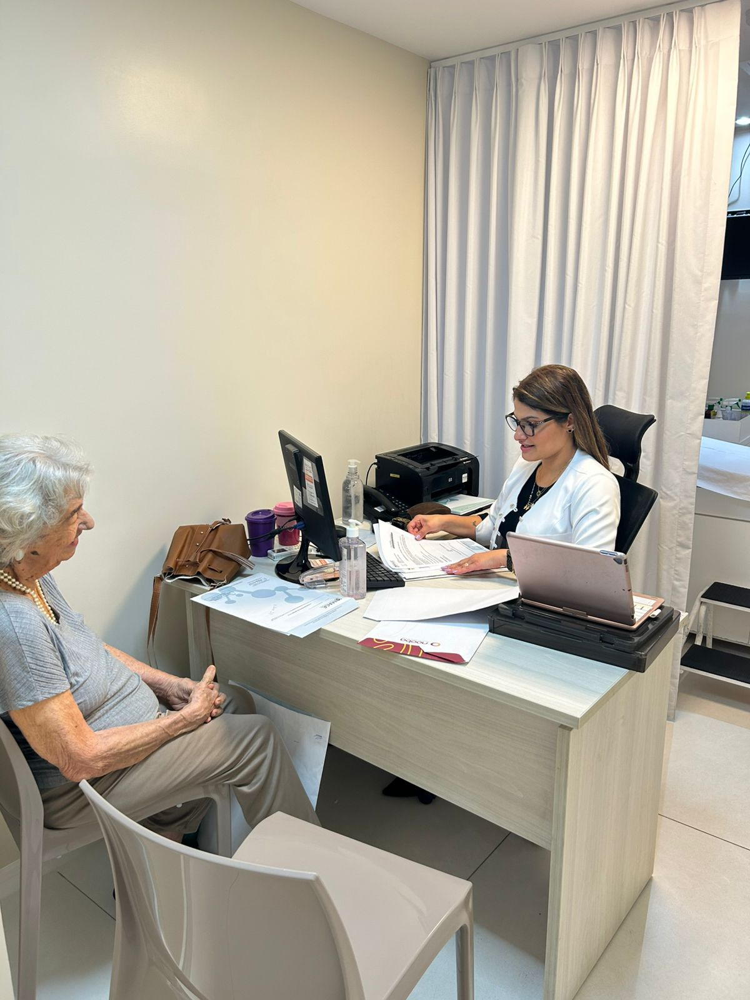

Atenção Especializada para Idosos
Cuidados humanizados e personalizados para a melhor idade, seja em casa ou em nossos consultórios.
Telemedicina
Consultas online com segurança e comodidade, sem sair de casa.
Atendimento Domiciliar
Visitas médicas no conforto do lar, garantindo cuidado integral e humanizado.
Atendimento Presencial
Consultas realizadas em consultório com infraestrutura completa para seu conforto.
Dra. Aishá Wenzinger
CRM: 20473 | RQE: 19692
Sobre Mim
- Dra. Aishá Wenzinger: Clínica Médica, Geriatria e Cuidados Paliativos.
- Médica graduada pela Escola Bahiana de Medicina e Saúde Pública, com 17 anos de formação.
- Especialista em Geriatria pelo Hospital Santo Antônio – Obras Sociais Irmã Dulce.
- Coordenadora da Geriatria do Hospital Português.
- Possui especialização em Cuidados Paliativos pelo Instituto Paliar e ampla experiência em ambientes hospitalares, ambulatórios e atendimentos domiciliares.
- Reconhecida pela escuta qualificada, empatia no cuidado e compromisso com a medicina baseada em evidências.

Experiência Profissional
- Formação Médica: Escola Bahiana de Medicina e Saúde Pública – 2008
- Hospital Geral do Estado (HGE 2): Médica Clínica e Emergencista (2013-presente)
- Hospital Português: Coordenadora da Geriatria (2021-presente)
- Clínica NewLife: Médica Geriatra (2016-presente)
- Atendimento Domiciliar: Desde 2017